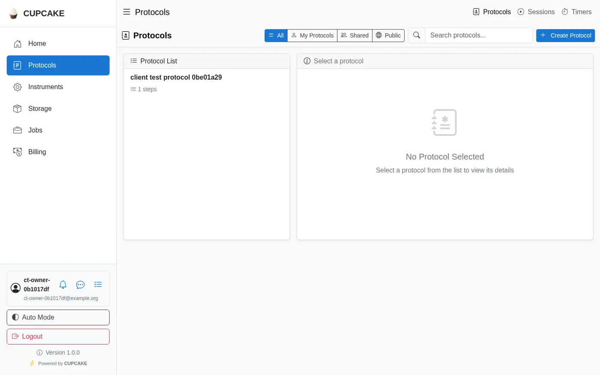
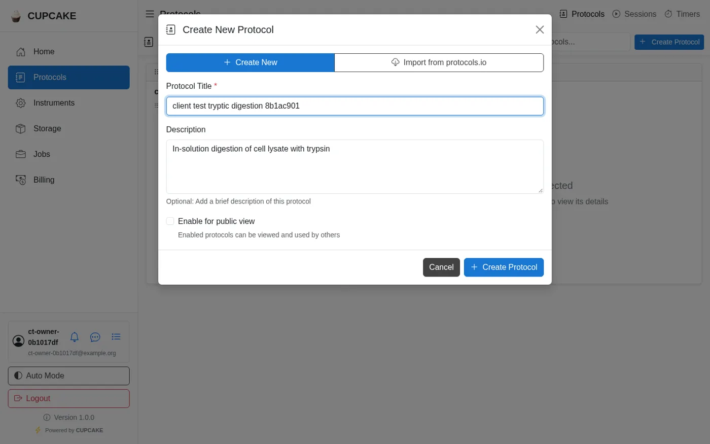
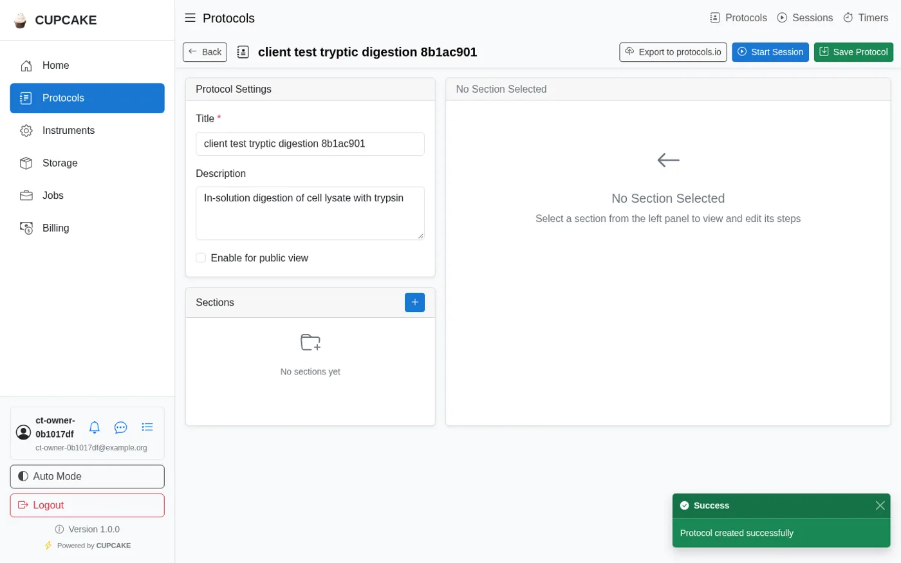
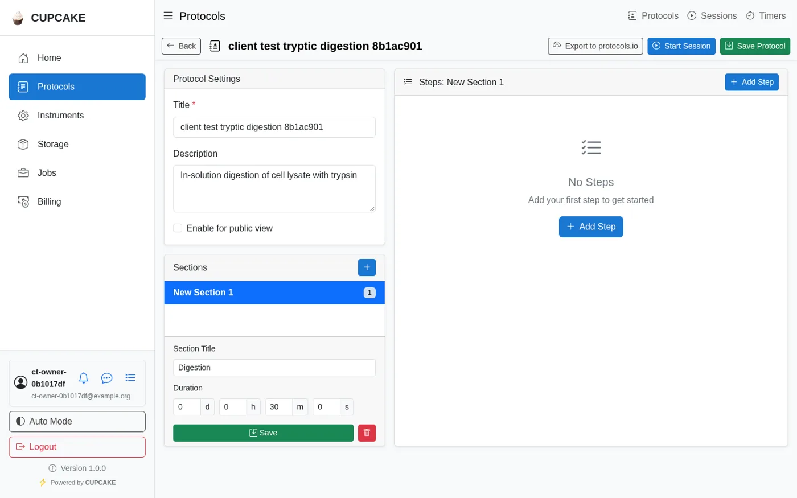
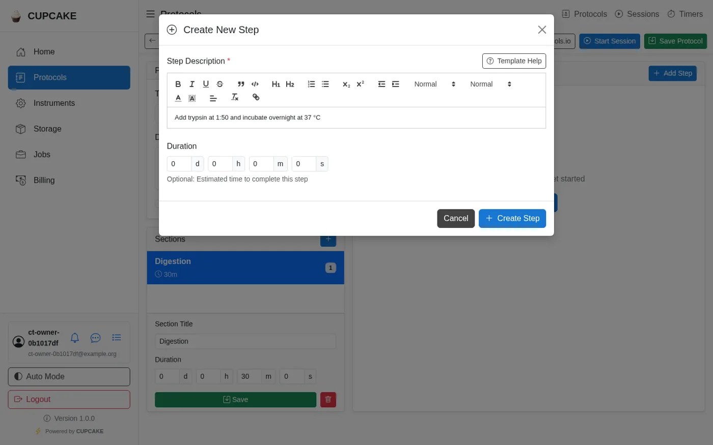
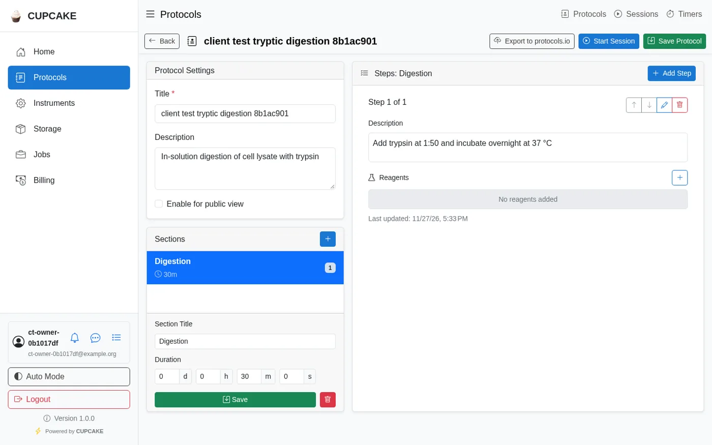
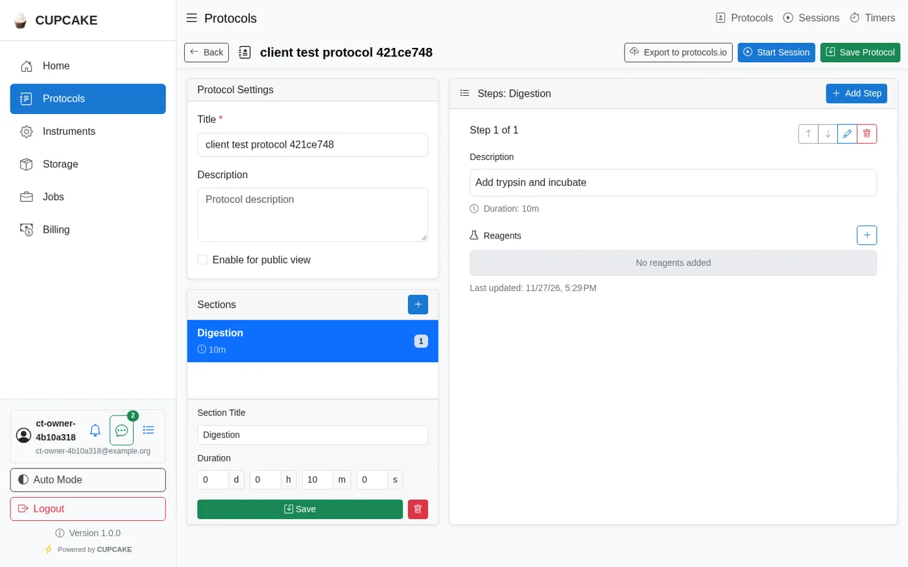

Protocols lists your protocols, those shared with you and public ones. Selecting one shows its description, number of steps, ratings of complexity and duration, and where it came from.

Creating a protocol
-
Choose Create Protocol, then Create New and enter the title and an optional description. Enable for public view lets others view and use it. Import from protocols.io imports a protocol from its protocols.io address instead, with its steps, sections and reagents.

-
The editor opens.

-
Add a section and give it a title and a duration.

-
Select the section and Add Step: describe the step and optionally give its duration.

-
Save Protocol.


Reagents in steps
A step can list the reagents it needs, with a quantity and unit. A scalable reagent's quantity is multiplied by
its scaling factor. In the step's description, %ID.name%, %ID.quantity%, %ID.scaled_quantity% and %ID.unit%
are replaced by the reagent's name, quantity, scaled quantity and unit, where ID is the step reagent's id; type a
space and % in the description to insert them.
From a protocol
Start Session starts a session from the protocol; see Sessions. Export to protocols.io copies it to protocols.io; see protocols.io.